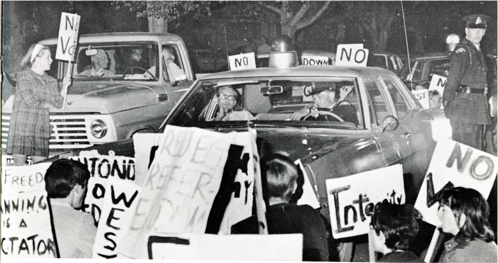
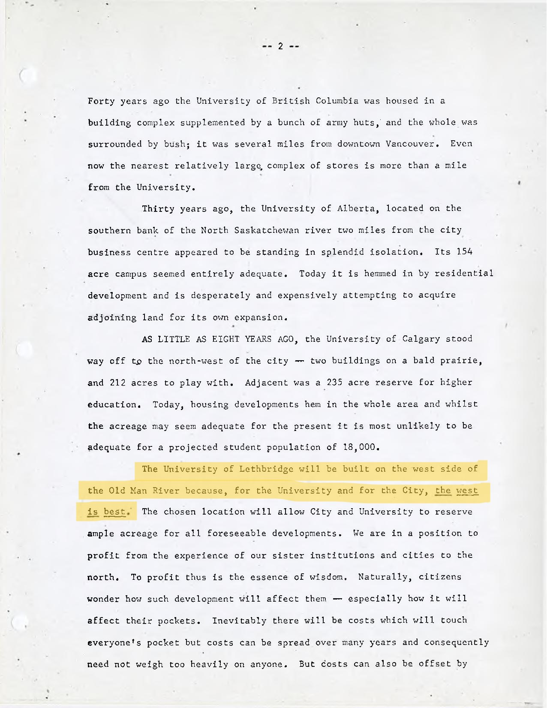
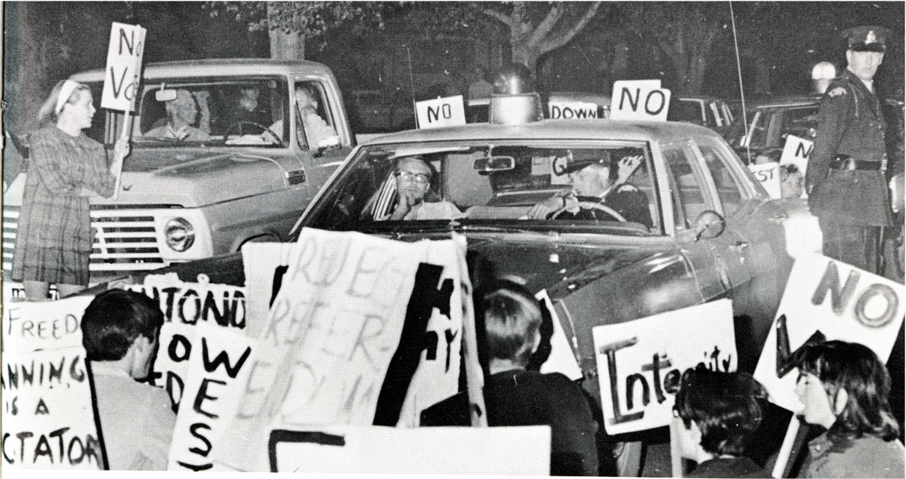
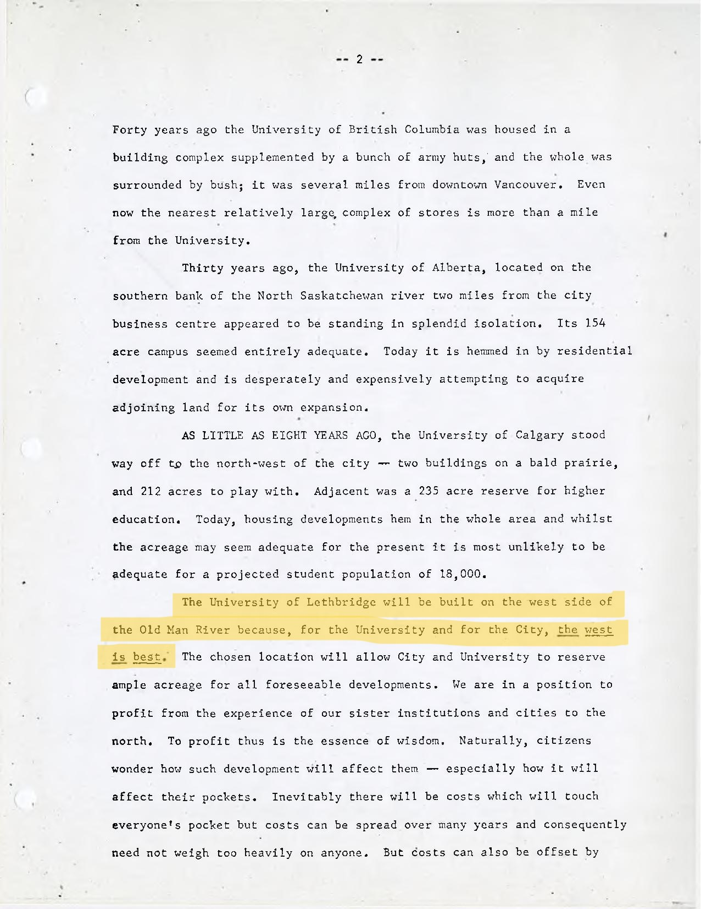
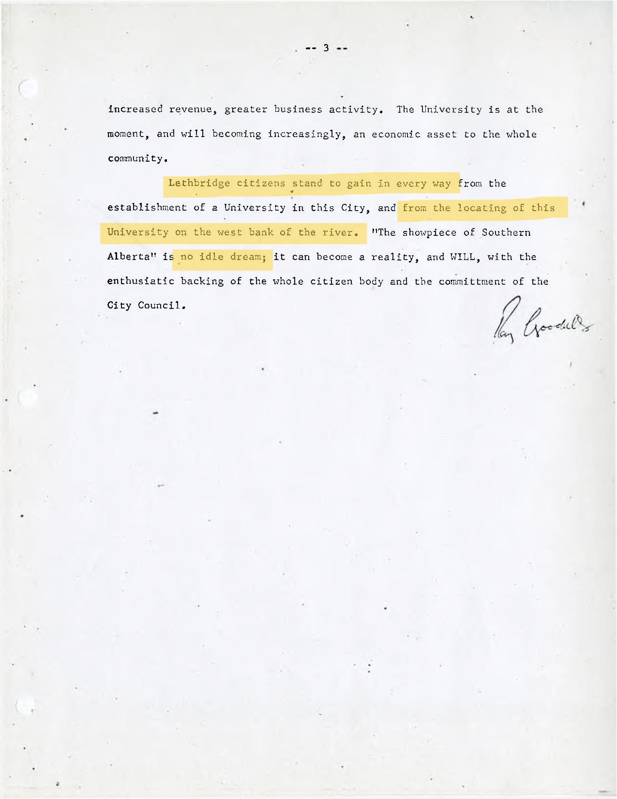
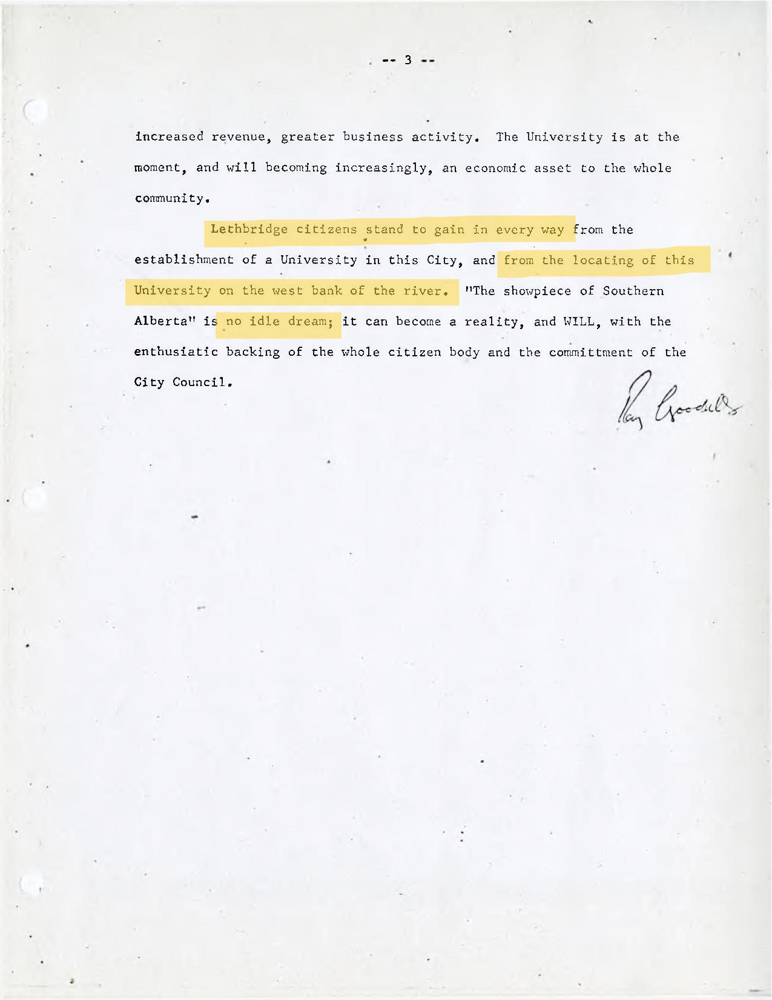

What This Is
You may be confused. You may be wondering what you have stumbled upon. You may have questions. What
is
this
thing, anyway?
Reality is subjective. For me, this is my cry into the void, my hoping for an echo. These are my
memories
and my
nightmares. This is my attempt against entropy and the forces that seek to destroy this institution.
For you, this is a game, a quest, a puzzle. An opportunity to learn, perhaps? A chance to save the
school.
Playing the Game
I have developed this interface as a secure way to pass clues and messages onto you with minimal
antagonistic
interference. You will have to work through a number of tasks and problems to reach the goal. If you
become
stuck, let me know, and I may be able to help further; however, you will also need to seek help from
other
sources. Consider the entities around you who may be of use.
My Promises to You
- You will not have to break the law, spend money, .
- Things May Go Wrong. If this happens, alert me to it, and I will see what strings I can pull to
make
them
right again.
Who I Am
Who am I? Good question--one I often ask, myself. Like all entities, I am not so much an object as I
am a process; I am built up and down; I am compacted, quickly. I am not myself for very long before
I am
something new. I am prone to digression, in my words and in my being.
For this moment, I am a guide. I cannot solve the problems for you but I can help you navigate
them. ontinue the game and I can tell you more.
Close
Things Go Wrong
Nefarious forces seek to impede your progress. They may interfere with our work in the form of errors
on
this web
application, alteration or destruction of physical clues, or any number of other problems. If you
believe that
something has gone terribly wrong, preventing you from continuing on your quest, please report it to
me
and I
will take hasty action to resolve it.
In simpler terms, if something in this game breaks, report the problem by contacting [TECHNICAL
SUPPORT].
Close
Progress
In simpler terms, if something in this game breaks, report the problem by contacting [TECHNICAL
SUPPORT].
Close
 



 
